How Long Since keeps track of when you last did the recurring things in your life — cleaning the fridge, watering the plants, calling a friend, changing the car’s oil. It’s not a to-do list, and it won’t nag you. It just remembers the last time, so you don’t have to.
Everything lives on your device. There’s no account to create and nothing to sign in to — you can start adding tasks the moment you open the app.
What How Long Since is
Most apps track what you need to do and when it’s due. How Long Since tracks something quieter but more useful for household and personal upkeep: how long it’s been since you last did each thing.
That small shift matters. A lot of recurring jobs don’t have a hard deadline — they just need doing “every so often.” You want to descale the coffee maker roughly every week, deep-clean the fridge every couple of weeks, and change the HVAC filter every few months. How Long Since holds those rhythms for you and gently flags a task once enough time has passed.
A few things that stay true throughout:
- Local-first. Your data is stored in your browser on your device. Nothing is uploaded, and no account is required.
- No guilt. Overdue tasks are marked clearly, but the tone stays neutral — a fact, not a scolding.
- Fast. Adding a task takes seconds, and marking one done is a single tap.
Add your first task
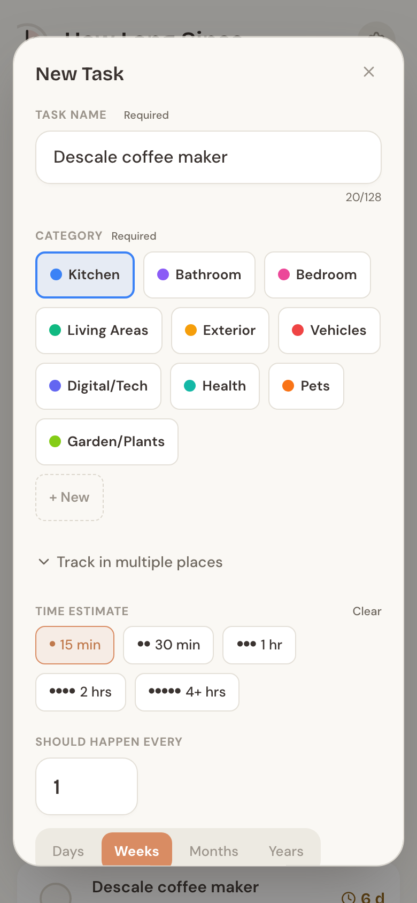
Tap the terracotta + button in the bottom corner to open the New Task form. Only two things are required:
- Task name — what needs doing, like “Descale coffee maker.” Up to 128 characters.
- Category — pick one of the colored pills, or tap + New to create your own on the spot.
Everything else is optional, and each option earns its keep:
- Time estimate — roughly how long the task takes: 15 min, 30 min, 1 hr, 2 hrs, or 4+ hrs. This powers the Quick Wins and By Time views, so it’s worth setting.
- Should happen every — a number plus Days, Weeks, Months, or Years. This is what lets the app flag a task as due soon or overdue. Leave it blank and the task is never overdue — the app just tracks how long it’s been.
- Last done — Today, Yesterday, or Pick date. Already did it a while ago? Backfill the real date so the count starts from the right place. If you leave it unset, the task starts as New.
Need to jot down more? Open Add details for a description and private notes. When you’re happy, tap Save task.
Track one job in many places
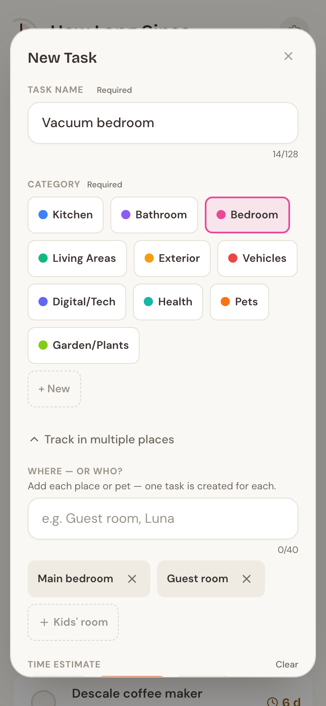
Some jobs happen in more than one spot — vacuuming three bedrooms, watering plants in two rooms, or the same care routine for two pets. Instead of adding the same task over and over, open Track in multiple places while creating a task.
Type each place or name — “Main bedroom,” “Guest room,” “Luna” — and press Enter or comma to turn it into a chip. If you’ve used labels in this category before, they show up as dashed suggestions you can tap to reuse.
When you save, How Long Since creates one task per place, all sharing the same name. From then on they’re independent: completing “Guest room” doesn’t touch “Main bedroom,” and editing one never changes the others. In the By Category and By Time views they tuck neatly into a single group row so your list stays tidy (more on that next). In Quick Wins each place is ranked on its own, so an urgent one never hides inside a group.
Three ways to see your tasks
Three tabs sit at the top of the app, and it remembers whichever one you used last.
Quick Wins answers a simple question: how much time do you have?
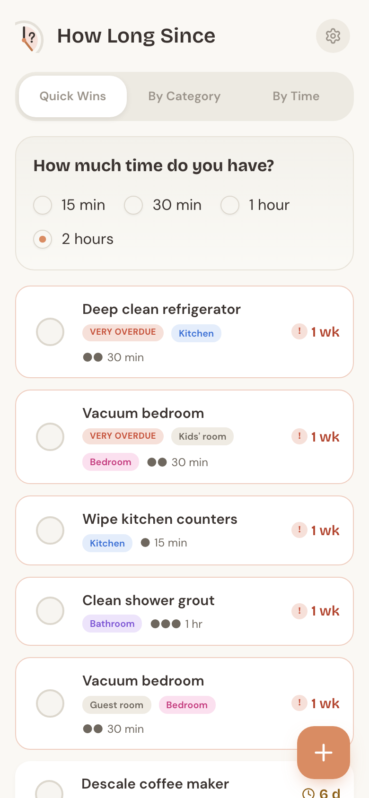
Pick 15 min, 30 min, 1 hour, or 2 hours, and the app shows the tasks that fit — most urgent first. Only tasks with a time estimate of 2 hours or less appear here, so it’s the place to go when you’ve got a spare pocket of time and want something you can actually finish. It shows up to eight suggestions at a time.
By Category groups everything under color-dot headers — Kitchen, Bathroom, Bedroom, and so on.
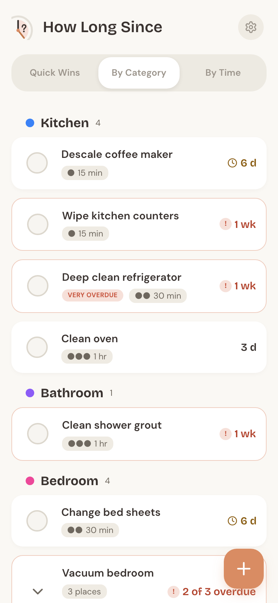
Tasks you’re tracking in multiple places collapse into one row with a “{n} places” chip and a quick “x of n overdue” summary. Tap it to expand the group and see each place on its own card:
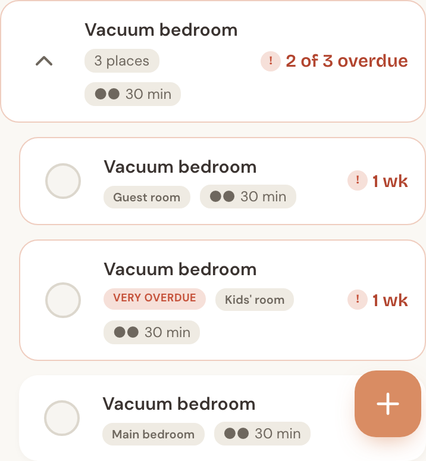
By Time sorts by how long tasks take — Quick tasks (15 min), Short tasks (30 min), Medium tasks (1 hr), Longer tasks (2 hrs), Big projects (4+ hrs), and a “No time set” group at the end.
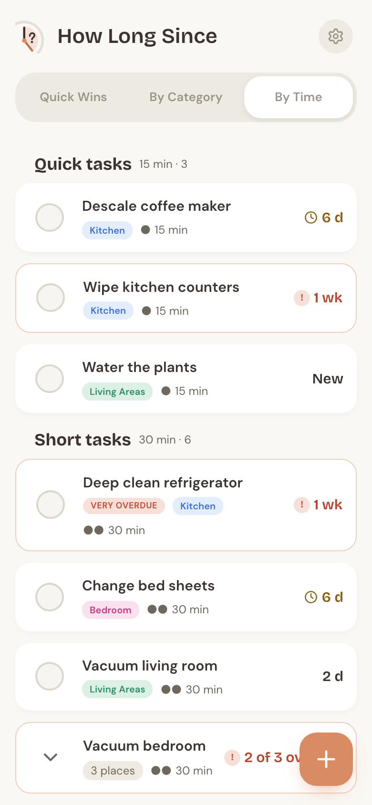
Each card carries a small tinted tag showing its category, so you never lose track of what belongs where.
Mark it done (and undo)
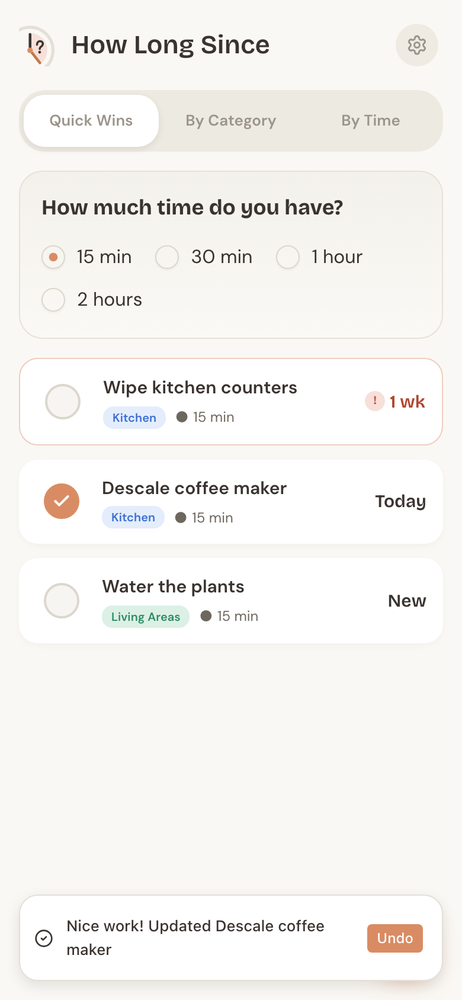
When you finish a task, tap the circle on the left of its row. That’s it — the app records the moment and resets the clock. You’ll see a brief “Nice work!” message with an Undo button.
Tapped the wrong row? Undo within five seconds and the task snaps back to exactly where it was, including its previous date. No harm done.
Each row also shows how long it’s been at a glance: New (never done), Today, Yest., or a compact count like 6 d, 1 wk, 3 mo, or 2 yr.
Overdue, without the guilt
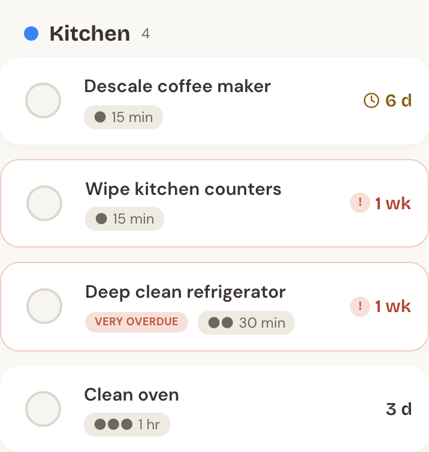
A task can be flagged only when it has both an expected frequency and a last-done date. Given those, How Long Since compares how much of the interval has passed:
- Due soon — you’re at 80% or more of the interval. A small clock icon appears.
- Overdue — the full interval has passed. The card gets a soft red border and a red “!” badge.
- Very overdue — half again past the interval (150%+). It adds a clear “Very overdue” label.
Because the flag scales with each task’s own rhythm, a daily task and a yearly task are judged fairly — not against a fixed number of days. A task marked New has never been completed, so it’s never overdue, no matter how long ago you added it. And the wording stays factual throughout: these are signals, not judgments.
Edit, archive, or delete
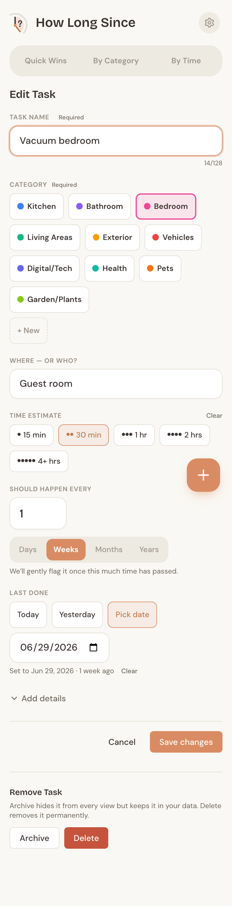
Tap any task’s name to open its edit page. You can change anything — name, category, time estimate, frequency, last-done date, the place label, and the details. Tap Save changes when you’re done.
At the bottom is a Remove Task area with two choices:
- Archive hides the task from every view but keeps it in your data and your backups. Use it for something you’ve stopped doing but might pick up again. This version has no un-archive button yet — archived tasks simply wait, safely stored, until a future update adds one.
- Delete removes the task permanently, after a quick confirmation. This one can’t be undone.
Organize with categories
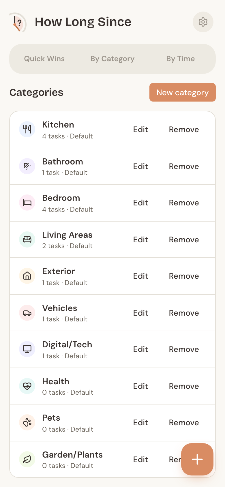
How Long Since starts you with ten categories — Kitchen, Bathroom, Bedroom, Living Areas, Exterior, Vehicles, Digital/Tech, Health, Pets, and Garden/Plants. You can reach Manage Categories from Settings or the footer of the By Category view.
From there you can rename any category, change its color (12 to choose from) or icon (15 options plus “None”), and add categories of your own. Deleting follows a few sensible rules:
- An empty category deletes after a quick confirm. (Archived tasks still count — a category holding only archived tasks asks for reassignment too.)
- A category with tasks asks you to reassign those tasks to another category first.
- A default category that still has tasks can’t be deleted — edit it instead.
Make it yours (Settings)
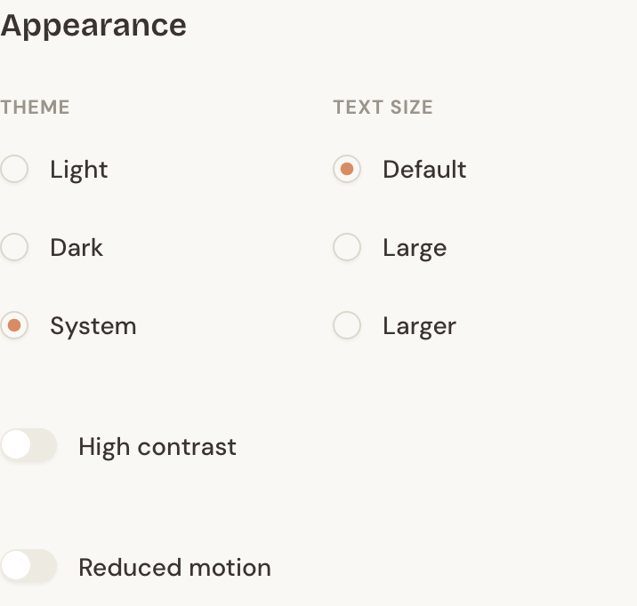
Open Settings from the gear icon in the header. Under Appearance you can:
- Switch between Light, Dark, and System themes.
- Bump the text size up to Large or Larger.
- Turn on High contrast for stronger borders and text.
- Turn on Reduced motion to calm animations.
You can also pick your Default View — the tab the app opens to. Switching tabs updates it too, so the app normally opens right where you left off. Under Notifications, you’ll see why reminders live inside the app: your data stays on your device with no account, so there are no phone or email alerts to turn on yet. Phone notifications may come in a later release, alongside optional cloud sync.
Back up and restore
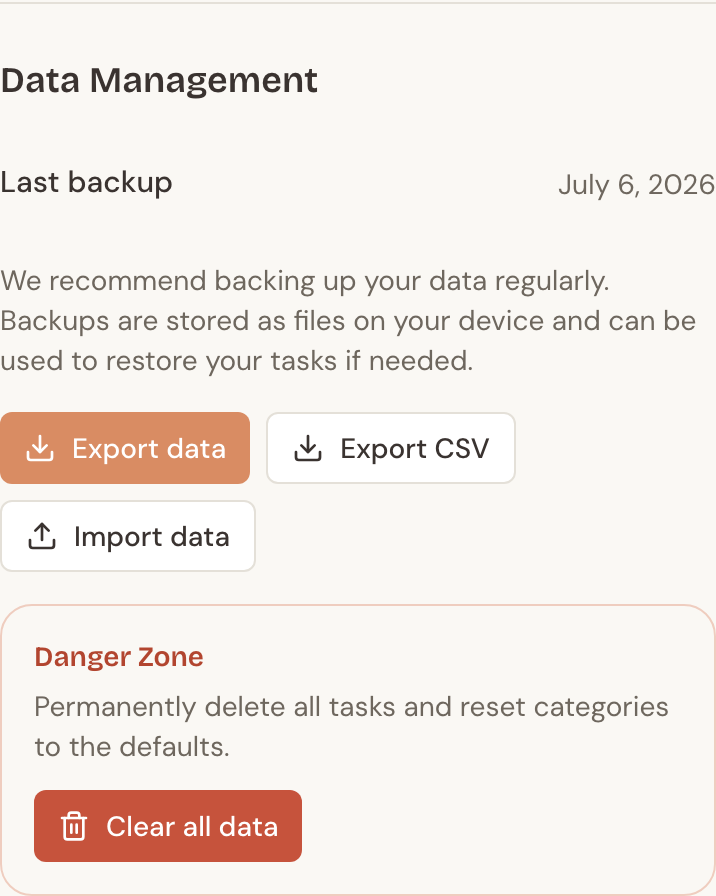
Because your data lives only on your device, backups matter. In Settings under Data Management:
- Export data saves a complete JSON backup file. This is the full, restorable copy of everything, and it stamps the “Last backup” date.
- Export CSV saves a tasks-only spreadsheet — handy for viewing your tasks elsewhere, though it isn’t used for restoring.
- Import data restores from a JSON backup. Importing replaces everything currently in the app, so it asks you to confirm first.
If it’s been more than two weeks since your last backup, a gentle reminder banner appears. And in the Danger Zone, Clear all data wipes your tasks and resets the categories to the ten defaults — useful for starting fresh, but there’s no undo, so export first.
Install it and use it offline
How Long Since is a Progressive Web App, which means you can install it like a regular app straight from your browser — look for Add to Home Screen or an Install option. Once installed, it runs full-screen and works completely offline, since all your data is already on your device. Updates arrive quietly in the background, so you’re always on the latest version without doing anything.
FAQ
How does the app decide something is overdue? It compares the time since you last completed a task against the frequency you set. Past 80% of that interval, it’s “due soon”; past 100%, “overdue”; past 150%, “very overdue.” A task needs both a frequency and a last-done date to be flagged at all.
Can I share my tasks with my household? Not yet — sharing and syncing between devices are planned for a later release. For now, you can move your data between devices with Export data and Import data.
How do I back up my data? Go to Settings → Data Management → Export data. Keep that JSON file somewhere safe; it’s the only file that can fully restore your tasks.
What happens if I clear my browser data? Because everything is stored in your browser, clearing site data (or using Clear all data) removes your tasks. That’s exactly why regular backups are worth the few seconds — an exported JSON file lets you restore everything.